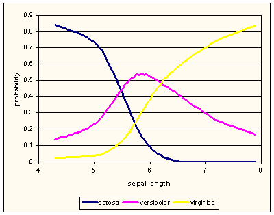

This is documentation for Orange 2.7. For the latest documentation, see Orange 3.
Feature discretization (discretization)¶
Feature discretization module provides rutines that consider continuous features and introduce a new discretized feature based on the training data set. Most often such procedure would be executed on all the features of the data set using implementations from Data discretization (discretization). Implementation in this module are concerned with discretization of one feature at the time, and do not provide wrappers for whole-data set discretization. The discretization is data-specific, and consist of learning of discretization procedure (see Discretization Algorithms) and actual discretization (see Discretizers) of the data. Splitting of these two phases is intentional, as in machine learing discretization may be learned from the training set and executed on the test set.
Consider a following example (part of discretization.py):
import Orange
data = Orange.data.Table("iris")
print "\nEntropy discretization, first 10 examples"
sep_w = Orange.feature.discretization.Entropy("sepal width", data)
data2 = data.select([data.domain["sepal width"], sep_w, data.domain.class_var])
for ex in data2[:10]:
print ex
The discretized attribute sep_w is constructed with a call to Entropy; instead of constructing it and calling it afterwards, we passed the arguments for calling to the constructor. We then constructed a new Orange.data.Table with attributes “sepal width” (the original continuous attribute), sep_w and the class attribute:
Entropy discretization, first 5 data instances
[3.5, '>3.30', 'Iris-setosa']
[3.0, '(2.90, 3.30]', 'Iris-setosa']
[3.2, '(2.90, 3.30]', 'Iris-setosa']
[3.1, '(2.90, 3.30]', 'Iris-setosa']
[3.6, '>3.30', 'Iris-setosa']
The name of the new categorical variable derives from the name of original continuous variable by adding a prefix D_. The values of the new attributes are computed automatically when they are needed using a transformation function get_value_from (see Orange.feature.Descriptor) which encodes the discretization:
>>> sep_w
EnumVariable 'D_sepal width'
>>> sep_w.get_value_from
<ClassifierFromVar instance at 0x01BA7DC0>
>>> sep_w.get_value_from.whichVar
FloatVariable 'sepal width'
>>> sep_w.get_value_from.transformer
<IntervalDiscretizer instance at 0x01BA2100>
>>> sep_w.get_value_from.transformer.points
<2.90000009537, 3.29999995232>
The select statement in the discretization script converted all data instances from data to the new domain. This includes a new feature sep_w whose values are computed on the fly by calling sep_w.get_value_from for each data instance. The original, continuous sepal width is passed to the transformer that determines the interval by its field points. Transformer returns the discrete value which is in turn returned by get_value_from and stored in the new example.
With exception to fixed discretization, discretization approaches infer the cut-off points from the training data set and thus construct a discretizer to convert continuous values of this feature into categorical value according to the rule found by discretization. In this respect, the discretization behaves similar to Orange.classification.Learner.
Discretization Algorithms¶
Instances of discretization classes are all derived from Discretization.
- class Orange.feature.discretization.Discretization¶
- __call__(variable, data[, weightID])¶
Given a continuous variable, data and, optionally id of attribute with example weight, this function returns a discretized feature. Argument variable can be a Descriptor, index or name of the variable within data.domain.
- class Orange.feature.discretization.EqualWidth¶
Discretizes the feature by spliting its domain to a fixed number of equal-width intervals. The span of original domain is computed from the training data and is defined by the smallest and the largest feature value.
- n¶
Number of discretization intervals (default: 4).
The following example discretizes Iris dataset features using six intervals. The script constructs a Orange.data.Table with discretized features and outputs their description:
disc = Orange.feature.discretization.EqualWidth(numberOfIntervals = 6)
newattrs = [disc(attr, data) for attr in data.domain.attributes]
data2 = data.select(newattrs + [data.domain.classVar])
for attr in newattrs:
print "%s: %s" % (attr.name, attr.values)
The output of this script is:
D_sepal length: <<4.90, [4.90, 5.50), [5.50, 6.10), [6.10, 6.70), [6.70, 7.30), >7.30>
D_sepal width: <<2.40, [2.40, 2.80), [2.80, 3.20), [3.20, 3.60), [3.60, 4.00), >4.00>
D_petal length: <<1.98, [1.98, 2.96), [2.96, 3.94), [3.94, 4.92), [4.92, 5.90), >5.90>
D_petal width: <<0.50, [0.50, 0.90), [0.90, 1.30), [1.30, 1.70), [1.70, 2.10), >2.10>
The cut-off values are hidden in the discretizer and stored in attr.get_value_from.transformer:
>>> for attr in newattrs:
... print "%s: first interval at %5.3f, step %5.3f" % \
... (attr.name, attr.get_value_from.transformer.first_cut, \
... attr.get_value_from.transformer.step)
D_sepal length: first interval at 4.900, step 0.600
D_sepal width: first interval at 2.400, step 0.400
D_petal length: first interval at 1.980, step 0.980
D_petal width: first interval at 0.500, step 0.400
All discretizers have the method construct_variable:
edisc = Orange.feature.discretization.EqualWidthDiscretizer(first_cut=2.0, step=1.0, n=5)
newattrs = [edisc.constructVariable(attr) for attr in data.domain.attributes]
data2 = data.select(newattrs + [data.domain.classVar])
for ex in data2[:10]:
print ex
- class Orange.feature.discretization.EqualFreq¶
Infers the cut-off points so that the discretization intervals contain approximately equal number of training data instances.
- n¶
Number of discretization intervals (default: 4).
The resulting discretizer is of class IntervalDiscretizer. Its transformer includes points that store the inferred cut-offs.
- class Orange.feature.discretization.Entropy¶
Entropy-based discretization as originally proposed by [FayyadIrani93]. The approach infers the most appropriate number of intervals by recursively splitting the domain of continuous feature to minimize the class-entropy of training examples. The splitting is repeated until the entropy decrease is smaller than the increase of minimal descripton length (MDL) induced by the new cut-off point.
Entropy-based discretization can reduce a continuous feature into a single interval if no suitable cut-off points are found. In this case the new feature is constant and can be removed. This discretization can therefore also serve for identification of non-informative features and thus used for feature subset selection.
- force_attribute¶
Forces the algorithm to induce at least one cut-off point, even when its information gain is lower than MDL (default: False).
Part of discretization.py:
entro = Orange.feature.discretization.Entropy()
for attr in data.domain.attributes:
disc = entro(attr, data)
print "%s: %s" % (attr.name, disc.get_value_from.transformer.points)
The output shows that all attributes are discretized onto three intervals:
sepal length: <5.5, 6.09999990463>
sepal width: <2.90000009537, 3.29999995232>
petal length: <1.89999997616, 4.69999980927>
petal width: <0.600000023842, 1.0000004768>
- class Orange.feature.discretization.BiModal¶
Infers two cut-off points to optimize the difference of class distribution of data instances in the middle and in the other two intervals. The difference is scored by chi-square statistics. All possible cut-off points are examined, thus the discretization runs in O(n^2). This discretization method is especially suitable for the attributes in which the middle region corresponds to normal and the outer regions to abnormal values of the feature.
- split_in_two¶
Decides whether the resulting attribute should have three or two values. If True (default), the feature will be discretized to three intervals and the discretizer is of type BiModalDiscretizer. If False the result is the ordinary IntervalDiscretizer.
Iris dataset has three-valued class attribute. The figure below, drawn using LOESS probability estimation, shows that sepal lenghts of versicolors are between lengths of setosas and virginicas.
If we merge classes setosa and virginica, we can observe if the bi-modal discretization would correctly recognize the interval in which versicolors dominate. The following scripts peforms the merging and construction of new data set with class that reports if iris is versicolor or not.
newclass = Orange.feature.Discrete("is versicolor", values = ["no", "yes"])
newclass.get_value_from = lambda ex, w: ex["iris"]=="Iris-versicolor"
newdomain = Orange.data.Domain(data.domain.attributes, newclass)
data_v = Orange.data.Table(newdomain, data)
The following script implements the discretization:
bimod = Orange.feature.discretization.BiModal()
for attr in data_v.domain.attributes:
disc = bimod(attr, data_v)
print "%s: (%5.3f, %5.3f]" % (attr.name, disc.get_value_from.transformer.low, disc.get_value_from.transformer.high)
The middle intervals are printed:
sepal length: (5.400, 6.200]
sepal width: (2.000, 2.900]
petal length: (1.900, 4.700]
petal width: (0.600, 1.600]
Judging by the graph, the cut-off points inferred by discretization for “sepal length” make sense.
Discretizers¶
Discretizers construct a categorical feature from the continuous feature according to the method they implement and its parameters. The most general is IntervalDiscretizer that is also used by most discretization methods. Two other discretizers, EquiDistDiscretizer and ThresholdDiscretizer> could easily be replaced by IntervalDiscretizer but are used for speed and simplicity. The fourth discretizer, BiModalDiscretizer is specialized for discretizations induced by BiModalDiscretization.
- class Orange.feature.discretization.Discretizer¶
A superclass implementing the construction of a new attribute from an existing one.
- construct_variable(variable)¶
Constructs a descriptor for a new variable. The new variable’s name is equal to variable.name prefixed by “D_”. Its symbolic values are specific to discretizer.
- class Orange.feature.discretization.IntervalDiscretizer¶
Discretizer defined with a set of cut-off points.
- points¶
The cut-off points; feature values below or equal to the first point will be mapped to the first interval, those between the first and the second point (including those equal to the second) are mapped to the second interval and so forth to the last interval which covers all values greater than the last value in points. The number of intervals is thus len(points)+1.
The script that follows is an examples of a manual construction of a discretizer with cut-off points at 3.0 and 5.0:
idisc = Orange.feature.discretization.IntervalDiscretizer(points = [3.0, 5.0])
sep_l = idisc.construct_variable(data.domain["sepal length"])
data2 = data.select([data.domain["sepal length"], sep_l, data.domain.classVar])
for ex in data2[:10]:
print ex
First five data instances of data2 are:
[5.1, '>5.00', 'Iris-setosa']
[4.9, '(3.00, 5.00]', 'Iris-setosa']
[4.7, '(3.00, 5.00]', 'Iris-setosa']
[4.6, '(3.00, 5.00]', 'Iris-setosa']
[5.0, '(3.00, 5.00]', 'Iris-setosa']
The same discretizer can be used on several features by calling the function construct_var:
idisc = Orange.feature.discretization.IntervalDiscretizer(points = [3.0, 5.0])
newattrs = [idisc.construct_variable(attr) for attr in data.domain.attributes]
data2 = data.select(newattrs + [data.domain.class_var])
for ex in data2[:10]:
print ex
Each feature has its own instance of ClassifierFromVar stored in get_value_from, but all use the same IntervalDiscretizer, idisc. Changing any element of its points affect all attributes.
Note
The length of points should not be changed if the discretizer is used by any attribute. The length of points should always match the number of values of the feature, which is determined by the length of the attribute’s field values. If attr is a discretized attribute, than len(attr.values) must equal len(attr.get_value_from.transformer.points)+1.
- class Orange.feature.discretization.EqualWidthDiscretizer¶
Discretizes to intervals of the fixed width. All values lower than first_cut are mapped to the first interval. Otherwise, value val‘s interval is floor((val-first_cut)/step). Possible overflows are mapped to the last intervals.
- first_cut¶
The first cut-off point.
- step¶
Width of the intervals.
- n¶
Number of the intervals.
- points(read-only)¶
The cut-off points; this is not a real attribute although it behaves as one. Reading it constructs a list of cut-off points and returns it, but changing the list doesn’t affect the discretizer. Only present to provide the EquiDistDiscretizer the same interface as that of IntervalDiscretizer.
- class Orange.feature.discretization.ThresholdDiscretizer¶
Threshold discretizer converts continuous values into binary by comparing them to a fixed threshold. Orange uses this discretizer for binarization of continuous attributes in decision trees.
- threshold¶
The value threshold; values below or equal to the threshold belong to the first interval and those that are greater go to the second.
- class Orange.feature.discretization.BiModalDiscretizer¶
Bimodal discretizer has two cut off points and values are discretized according to whether or not they belong to the region between these points which includes the lower but not the upper boundary. The discretizer is returned by BiModalDiscretization if its field split_in_two is true (the default).
- low¶
Lower boundary of the interval (included in the interval).
- high¶
Upper boundary of the interval (not included in the interval).
References¶
| [FayyadIrani93] | UM Fayyad and KB Irani. Multi-interval discretization of continuous valued attributes for classification learning. In Proc. 13th International Joint Conference on Artificial Intelligence, pages 1022–1029, Chambery, France, 1993. |